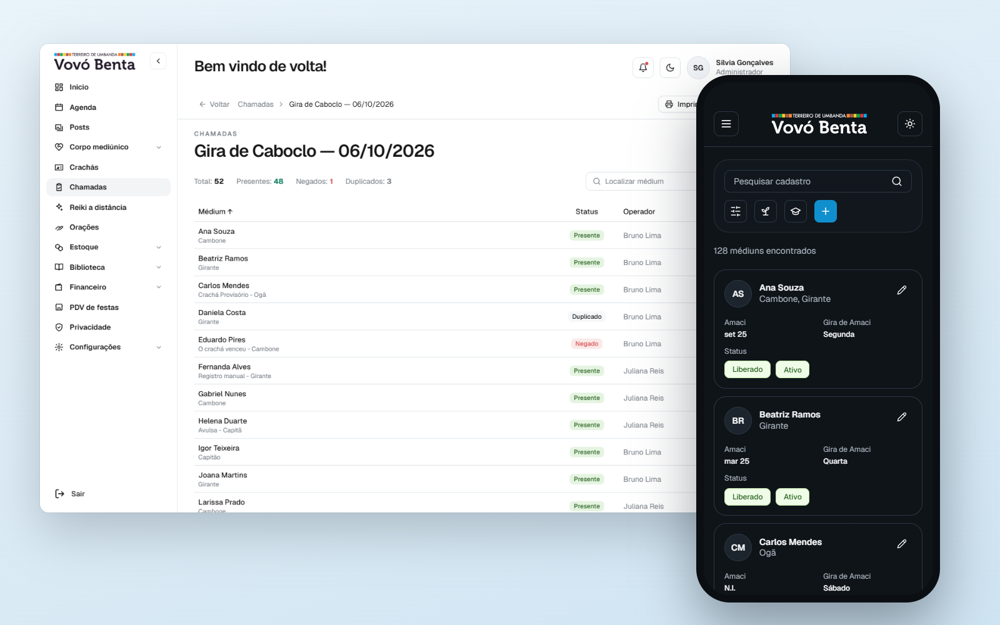
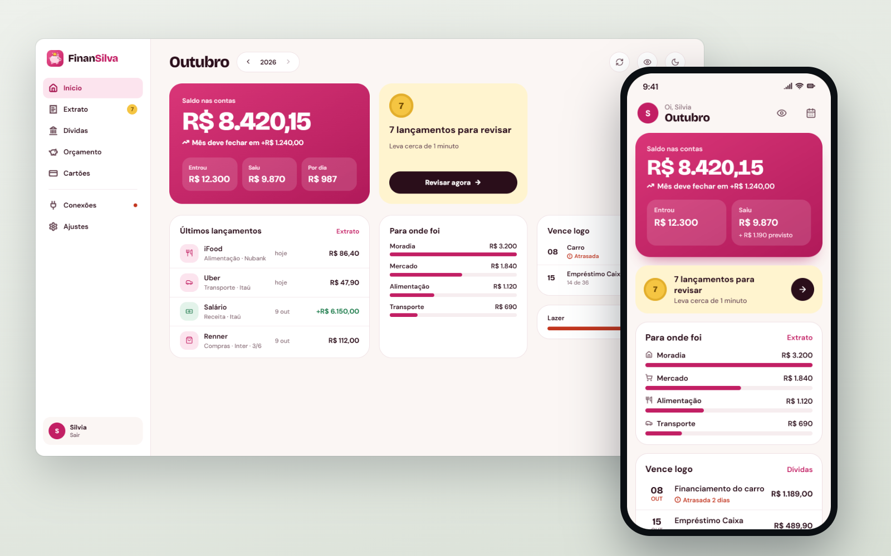
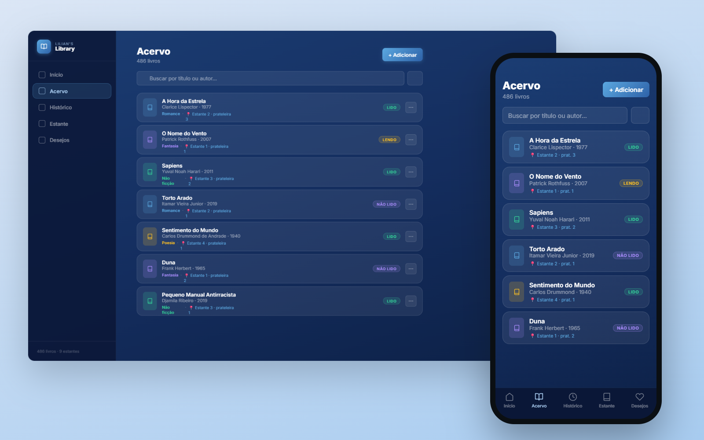
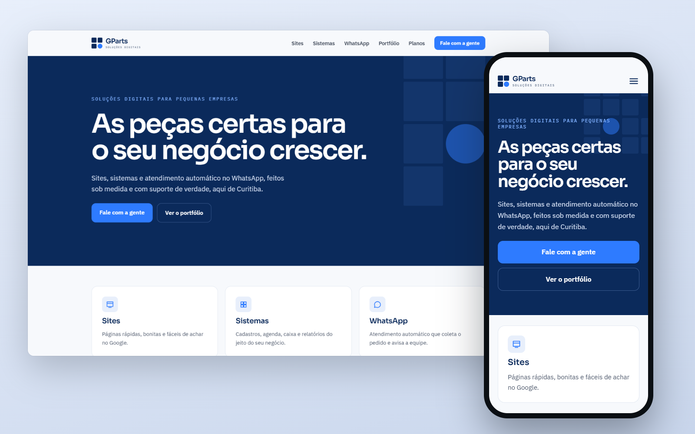
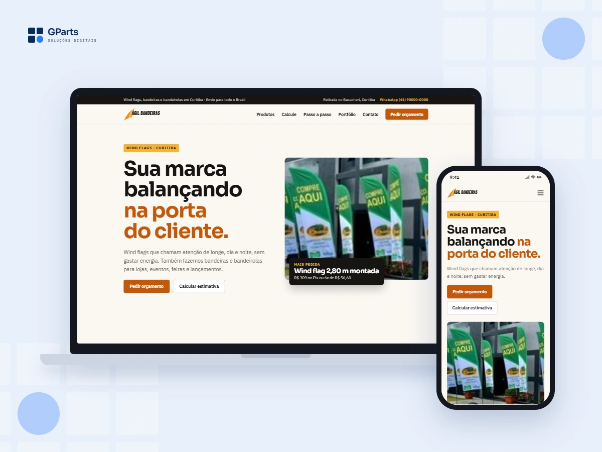
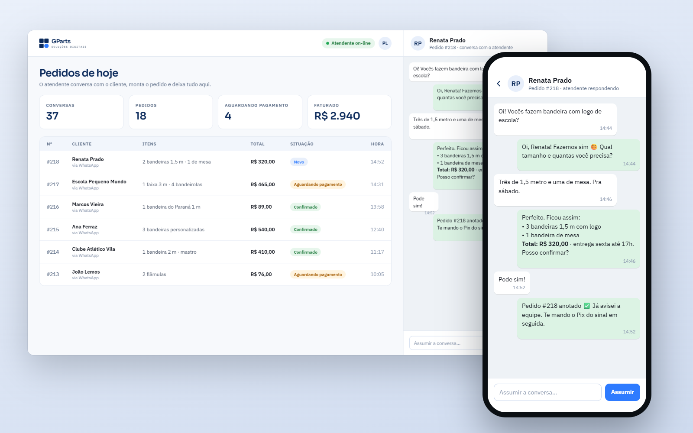
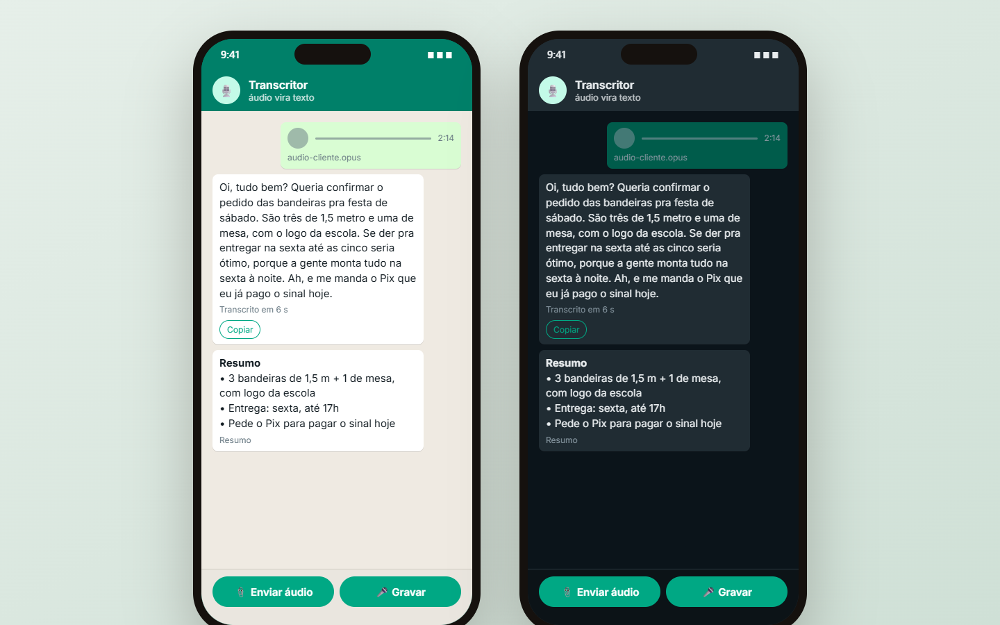
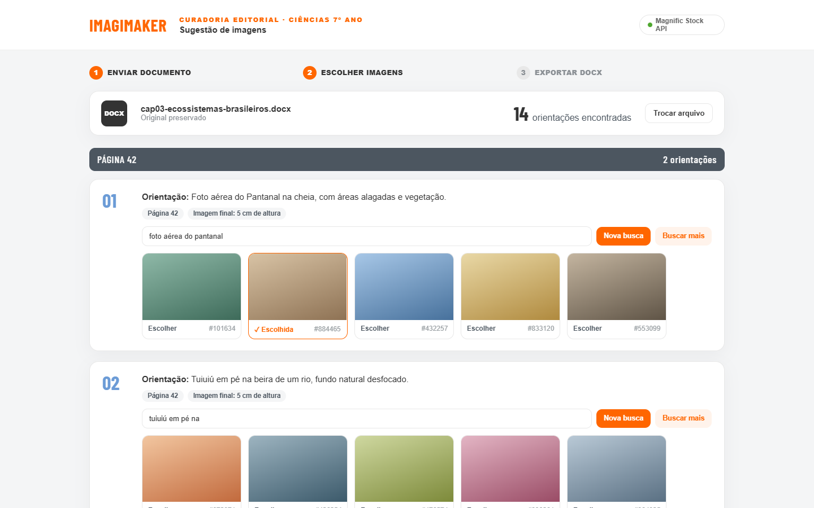
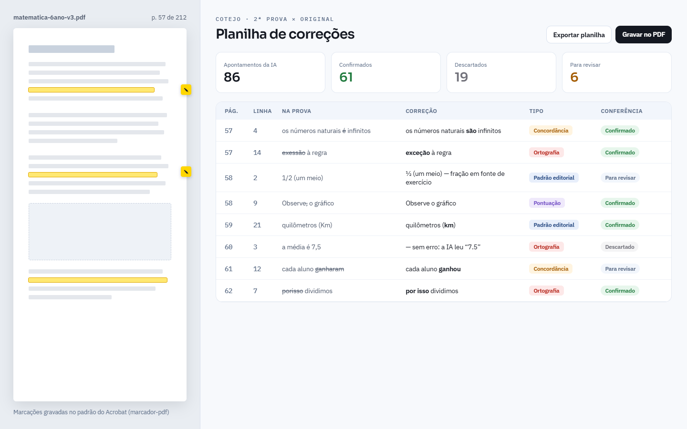
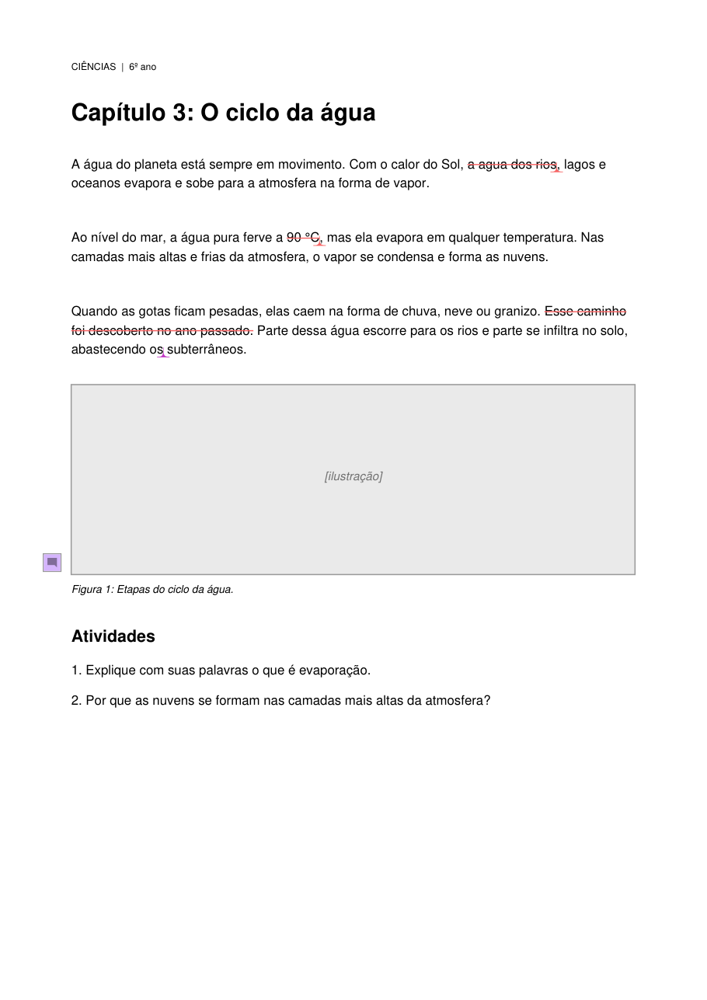

Desenvolvedora full stack · Curitiba, PR
Sistemas em produção, feitos para quem não é técnico.
TypeScript, Python e MongoDB. Antes do código, oito anos ensinando robótica e escrevendo livros didáticos.
300+pessoas usam o TVB System
100+arquivos de teste no FinanSilva
2projetos de código aberto
Projetos

Sistemasestudo de caso
TVB System
Gestão de uma instituição com 300+ usuários: chamada por QR Code, PDV, estoque e financeiro.
TypeScript · Next.js · MongoDB

Sistemasestudo de caso
FinanSilva
Finanças da casa via Open Finance, com os dados de cada casa isolados e testados por ataque.
Next.js · Prisma · Pluggy · Vitest

Sistemas
Biblioteca pessoal
Acervo, histórico de leitura e a posição de cada livro na estante.
React · Hono · Cloudflare D1

Sitesno ar
GParts
Marca, design system e site da minha empresa de soluções digitais.
React · Vite · Vercel

Sitesno ar
Ágil Bandeiras
Catálogo com calculadora de preço e orçamento direto no WhatsApp.
HTML · CSS · JavaScript

IAprotótipo
Atendente de WhatsApp
Atende o cliente, coleta o pedido e entrega tudo organizado num painel.
Python · Groq · MongoDB

Automaçãoopen source
Transcritor de áudios
Áudio do WhatsApp vira texto pelo menu Compartilhar do celular.
Python · Whisper · PWA

IA
Closet App
Guarda-roupa por foto, com looks pela ocasião e pelo clima.
Next.js · Prisma · MongoDB

Automação
Imagens para livros
Lê o DOCX, encontra as orientações de imagem e sugere fotos de banco via API.
TypeScript · Python

IA
Fluxo de revisão com IA
Cotejo de livros, marcação de PDFs e auditorias, sempre com conferência humana.
Python · IA generativa

Automaçãoopen source
marcador-pdf
Grava marcações de revisão em PDF no padrão do Acrobat, por engenharia reversa.
Python · PyMuPDF
A maioria é de clientes ou uso interno, então o código fica privado. Apresento qualquer um deles numa conversa.
// educação
Robótica educacional desde 2018, aproximando meninas da tecnologia.
Aulas do Fundamental ao Médio, formação de professores, autoria de livros PNLD e um projeto premiado na PUCPR.